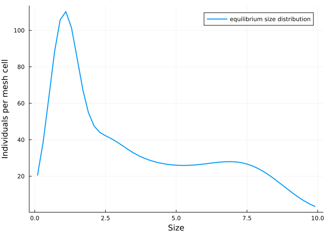
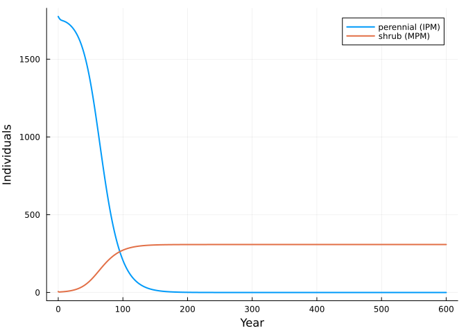

Composing an integral projection model with a matrix model
Simon Frost
- Beyond matrices
- A size-structured perennial
- Adding a stage-structured competitor
- Predicting the outcome without simulating
- The mesh does not matter
- Reference
ENV["GKSwstype"] = "100"
using MatrixCommunityModels
using IntegralProjectionModels: ContinuousDomain, meshpoints, materialize, PKernel, FKernel,
LinearSurvival, NormalGrowth, FecundityRate
using PlotsBeyond matrices
Lytle & Tonkin (2023) note that a matrix structure “is not strictly required” for a community model: any population model with density dependence could be linked through the same dependency assumption. An integral projection model (IPM) describes a population structured by a continuous trait such as size. Once discretised on a mesh it is a projection matrix, so it can be a box in the same wiring diagram as a stage-structured species. All it needs is a statement of how much of the pool an individual of each size occupies.
A size-structured perennial
The kernels come from IntegralProjectionModels.jl: survival increases with size, growth is normally distributed around a linear function of size, and seed production increases exponentially with size.
function perennial_kernels(mesh)
domain = ContinuousDomain(0.0, 10.0, mesh)
P = materialize(PKernel(LinearSurvival(-0.5, 0.4), NormalGrowth(1.2, 0.85, 0.7), domain))
F = materialize(FKernel(FecundityRate(-1.0, 0.5, 1.0, 0.5, 0.2), domain))
return P, F, meshpoints(domain)
end
P, F, z = perennial_kernels(50)
size(P), size(F)((50, 50), (50, 50))MatrixSpecies takes a function returning the survival and fecundity matrices. Recruitment is limited by space, and an individual of size z occupies 0.02 z² units of it.
K = 1000.0
crowding(ctx) = max(0.0, 1 - ctx.pool.space / K)
function perennial(mesh)
P, F, z = perennial_kernels(mesh)
MatrixSpecies(:perennial, [Symbol(:z, i) for i in 1:mesh], ctx -> (P, F .* crowding(ctx));
occupancy = [:space => 0.02 .* z .^ 2])
end
ipm = perennial(50)MatrixSpecies(:perennial, [:z1, :z2, :z3, :z4, :z5, :z6, :z7, :z8, :z9, :z10 … :z41, :z42, :z43, :z44, :z45, :z46, :z47, :z48, :z49, :z50], var"#perennial##2#perennial##3"{Matrix{Float64}, Matrix{Float64}}([0.0024426612018546155 0.00269955812300143 … 0.2968087824941689 0.32802443464199604; 0.004632460263937332 0.005119660362844578 … 0.5628921808099736 0.6220920682433624; … ; 2.228033028155068e-68 2.4623573072290015e-68 … 2.7072922349665334e-66 2.992020644817038e-66; 1.9520389175552246e-71 2.157336642633901e-71 … 2.371930638849545e-69 2.6213887617491104e-69], [0.010525531811985395 0.007109765527739659 … 2.1967336415389007e-40 8.356534376050867e-42; 0.016389830476615415 0.011866438997669244 … 9.562563536422013e-39 3.899041484399527e-40; … ; 1.834674168059157e-33 3.464469128596772e-32 … 0.10315379883564431 0.10969846452461192; 5.677590202329735e-35 1.1491494445349596e-33 … 0.08923944121274352 0.10172012465862411]), Pair{Symbol, Any}[:space => [0.00020000000000000004, 0.0018000000000000006, 0.005, 0.0098, 0.016200000000000003, 0.024200000000000003, 0.03379999999999999, 0.045, 0.05780000000000001, 0.0722 … 1.3122, 1.3778000000000004, 1.445, 1.5137999999999998, 1.5842000000000003, 1.6562, 1.7298000000000002, 1.805, 1.8818, 1.9602000000000002]], Pair{Symbol, Any}[], nothing)On its own the perennial grows to an equilibrium that fills about two thirds of the space:
n0 = zeros(50)
n0[z .< 2] .= 2.0
alone = open_community(ipm)
eq = equilibrium(alone, n0, nothing)
(converged = eq.converged, individuals = sum(eq.n), space = pool_totals(alone, eq.n, nothing).space)(converged = true, individuals = 1774.6585917775658, space = 676.7432286069879)plot(z, eq.n; xlabel = "Size", ylabel = "Individuals per mesh cell", label = "equilibrium size distribution", lw = 2)
Adding a stage-structured competitor
The shrub is the three-stage matrix model of the introduction. The two species are composed exactly as two matrix models would be.
shrub = Species(:shrub, [:seedling, :juvenile, :adult],
[survival(:establish, :seedling => :juvenile, 0.30),
survival(:mature, :juvenile => :adult, 0.50),
survival(:persist, :adult => :adult, 0.95),
fecundity(:seed, :adult => :seedling, ctx -> 3.0 * crowding(ctx))];
occupancy = [:space => [0.1, 1.0, 4.0]])
com = community(ipm, shrub)
sol = project(com, [eq.n; 5.0; 0.0; 1.0], fill(nothing, 600))
plot(sol.t, [sum(sol[:perennial]; dims = 2) sum(sol[:shrub]; dims = 2)];
label = ["perennial (IPM)" "shrub (MPM)"], xlabel = "Year", ylabel = "Individuals", lw = 2)
The shrub invades the established perennial and slowly replaces it.
Predicting the outcome without simulating
Each species alone settles at the level of crowding at which it just replaces itself. The other species can invade if its growth rate at that level of crowding exceeds one.
shrub_alone = open_community(shrub)
seq = equilibrium(shrub_alone, [5.0, 0.0, 1.0], nothing)
(shrub_into_perennial = invasion_growth_rate(shrub, alone, eq.n, nothing),
perennial_into_shrub = invasion_growth_rate(ipm, shrub_alone, seq.n, nothing))(shrub_into_perennial = 1.0757099780692048, perennial_into_shrub = 0.9473116713958115)The shrub can invade the perennial’s equilibrium but the perennial cannot invade the shrub’s, which is the replacement seen in the projection.
The mesh does not matter
The pool total is an integral over the size distribution, so a finer mesh changes the number of states but not the model:
for mesh in (50, 100, 200)
sp = perennial(mesh)
zz = perennial_kernels(mesh)[3]
start = zeros(mesh)
start[zz .< 2] .= 20 / count(zz .< 2)
e = equilibrium(open_community(sp), start, nothing)
println("mesh ", mesh, ": individuals ", round(sum(e.n); digits = 1), ", space ",
round(pool_totals(open_community(sp), e.n, nothing).space; digits = 1),
", shrub invasion rate ", round(invasion_growth_rate(shrub, open_community(sp), e.n, nothing); digits = 4))
endmesh 50: individuals 1774.7, space 676.7, shrub invasion rate 1.0757
mesh 100: individuals 1774.2, space 676.3, shrub invasion rate 1.0758
mesh 200: individuals 1774.1, space 676.2, shrub invasion rate 1.0759Reference
Lytle, D. A. & Tonkin, J. D. (2023). Matrix community models for ecology and evolution. npj Biodiversity 2, 26.